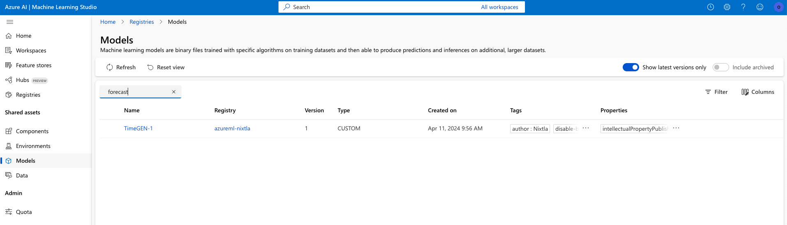

library(nixtlar)
#> Error in get(paste0(generic, ".", class), envir = get_method_env()) :
#> object 'type_sum.accel' not foundTimeGEN-1 is TimeGPT optimized for Azure, Microsoft’s cloud computing
service. You can easily access TimeGEN via nixtlar. To do
this, just follow these steps:
1. Set up a TimeGEN-1 endpoint account and generate your API key on Azure.
- Go to ml.azure.com
- Sign in or create an account.
- If you don’t have one already, create a workspace. This might require a subscription.

- Click on
Modelsin the sidebar and selectTimeGENin the model catalog.

- Click
Deploy. This will create an Endpoint.

- Go to your Endpoint in the sidebar. Here you will find your Base URL and the API key.

2. Install nixtlar
In your favorite R IDE, install nixtlar from CRAN or
GitHub.
install.packages("nixtlar") # CRAN version
library(devtools)
devtools::install_github("Nixtla/nixtlar")3. Set up the Base URL and API key
To do this, use the nixtla_client_setup function.
nixtla_client_setup(
base_url = "Base URL here",
api_key = "API key here"
)4. Start making forecasts!
Now you can start making forecasts! We will use the electricity
dataset that is included in nixtlar. This dataset contains
the prices of different electricity markets.
df <- nixtlar::electricity
nixtla_client_fcst <- nixtla_client_forecast(df, h = 8, level = c(80,95))
#> Frequency chosen: h
head(nixtla_client_fcst)
#> unique_id ds TimeGPT TimeGPT-lo-95 TimeGPT-lo-80
#> 1 BE 2016-12-31 00:00:00 45.19067 30.49690 35.50871
#> 2 BE 2016-12-31 01:00:00 43.24491 28.96405 35.37627
#> 3 BE 2016-12-31 02:00:00 41.95889 27.06674 35.34068
#> 4 BE 2016-12-31 03:00:00 39.79668 27.96726 32.32737
#> 5 BE 2016-12-31 04:00:00 39.20456 24.66173 30.99833
#> 6 BE 2016-12-31 05:00:00 40.10912 23.05270 32.43550
#> TimeGPT-hi-80 TimeGPT-hi-95
#> 1 54.87264 59.88444
#> 2 51.11356 57.52577
#> 3 48.57710 56.85105
#> 4 47.26598 51.62609
#> 5 47.41079 53.74739
#> 6 47.78273 57.16553We can plot the forecasts with the nixtla_client_plot
function.
nixtla_client_plot(df, nixtla_client_fcst, max_insample_length = 200)
To learn more about data requirements and TimeGPT’s capabilities, please read the nixtlar vignettes.
Discover the power of TimeGEN on Azure via
nixtlar.
Deploying TimeGEN via nixtlar on Azure allows you to
implement robust and scalable forecasting solutions. This not only
simplifies the integration of advanced analytics into your workflows but
also ensures that you have the power of Azure’s cutting-edge technology
at your disposal through a pay-as-you-go service. To learn more, read here.